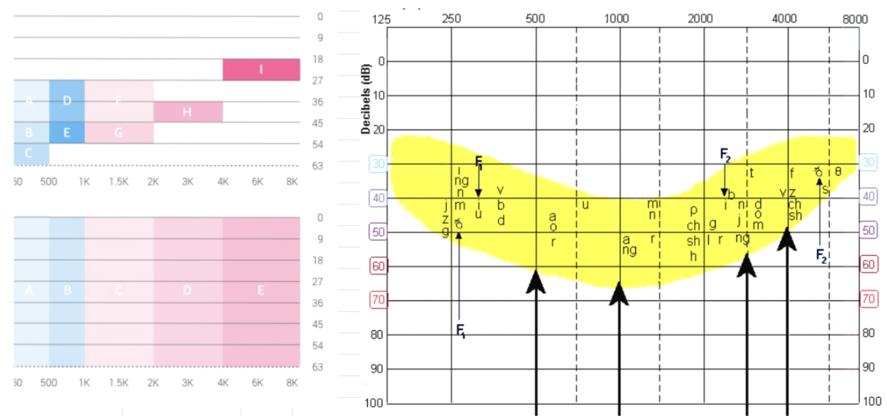
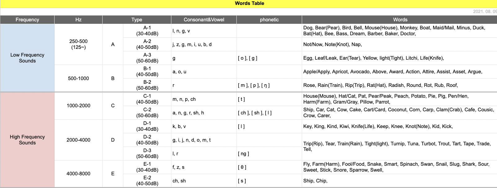
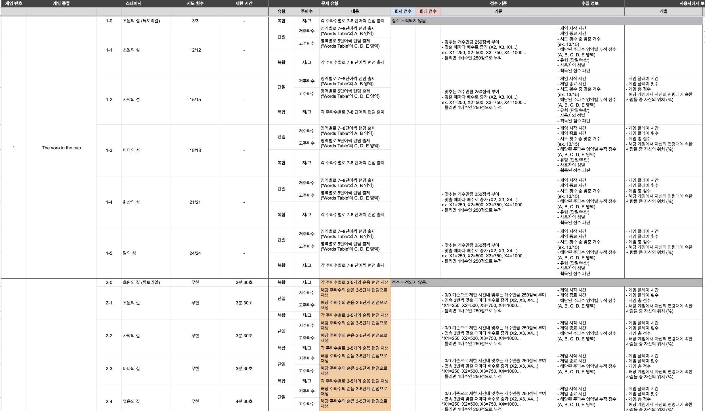
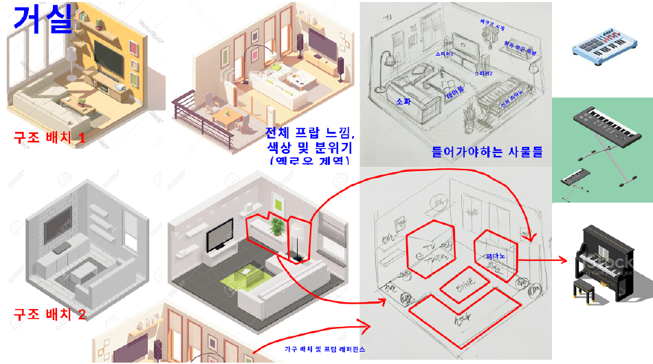
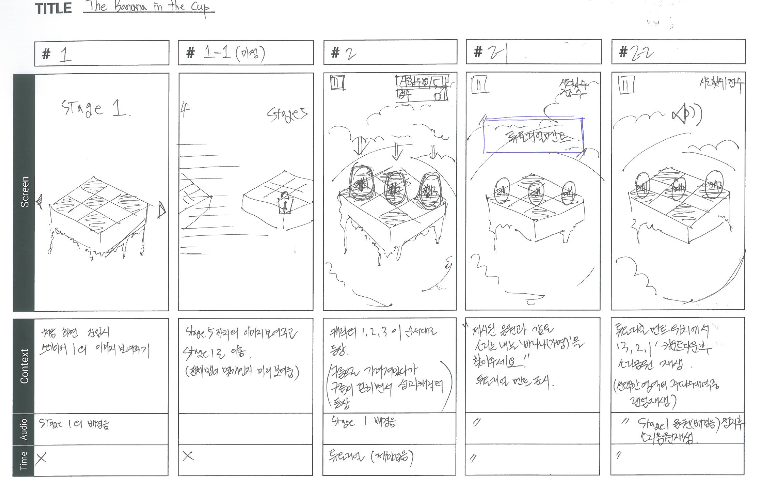
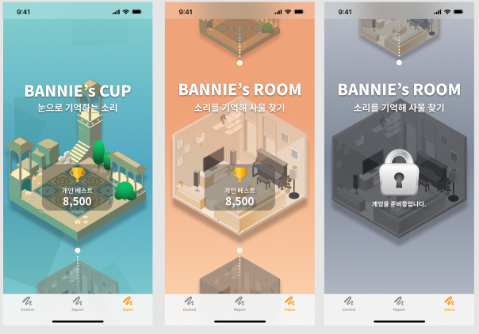
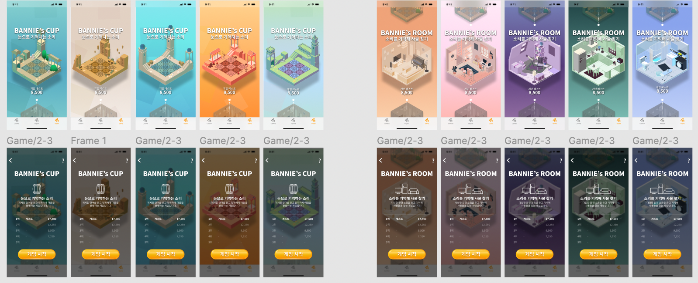

난청 환자의 인지 행동과 어음(말소리) 변별 능력을 훈련하는 디지털 치료제, Bannie's Adventure를 기획하고 게임/UI 디자인을 리드했습니다.
난청 환자는 어음(말소리) 변별 훈련이 필요하지만, 기존 훈련은 반복적인 청각 훈련 형태라 지속하기 어렵고 이탈이 잦았습니다. 어음 변별 훈련 관련 논문·자료를 찾던 중 'Speech Banana'라는 주파수 대역별 단어·발음 그래프를 발견했고, 이 개념을 게임에 적용하면 훈련을 지속 가능한 형태로 바꿀 수 있을 거라 판단했습니다.
만약:
그러면:
반복 훈련에 대한 거부감이 줄고, 어음 변별 능력이 자연스럽게 훈련될 것이다
오디오그램 상에서 일상 언어의 음소들이 분포하는 바나나 모양 영역을 뜻하며, 청각·언어재활 분야에서 난청 정도별로 들리는/들리지 않는 음소를 설명할 때 쓰이는 참조 차트입니다. 이 차트를 기준으로 게임에 쓸 단어를 직접 분류했습니다.

주파수 대역(저주파~고주파)과 데시벨 구간별로 실제 게임에 쓰일 단어를 직접 분류했습니다. 저주파(250~1000Hz)는 A·B 영역, 고주파(1000~8000Hz)는 C·D·E 영역으로 나눠 각 영역에 맞는 단어 세트를 매핑했습니다.

User research · Creative ideation
Game strategy · Design strategy · Wireframing · Visual/UI design
Game Workflow · Prototyping
같은 단어를 말하는 캐릭터를 눈과 귀로 기억해 찾는 게임. 소리를 시각·청각 기억으로 연결하는 훈련입니다.
방 안에 숨겨진 사물이 내는 소리를 듣고 방향과 위치를 찾는 게임. 환경 소음 속에서 목표음을 구별하는 능력을 훈련합니다.
스테이지마다 저주파/고주파 영역(Words Table 기준)에서 단일·복합 문제를 랜덤 출제하고, 맞춘 개수·연속 정답 여부에 따라 점수가 배수로 누적되도록 설계했습니다. 게임 시작/종료 시간, 시도 횟수 대비 정답 수, 연령대별 위치(%) 등도 함께 수집합니다.

게임 개발 업체에게 원하는 디자인 방향성을 전달하기 위해 손 그림 및 레퍼런스를 직접 제작했습니다. (예: Bannie's Room · 거실)

구조 배치 → 전체 프랍 느낌·색상·분위기 → 들어가야 하는 사물 지정까지, 손그림으로 먼저 방향을 잡고 실제 3D 에셋으로 이어지도록 가이드했습니다.

스테이지 진입부터 캐릭터 등장, 문제 제시, 정답 반응까지 화면(Screen)·상황(Context)·오디오(Audio)·타이밍(Time)을 컷 단위로 직접 정리해 개발사에 전달했습니다.


스테이지별 테마 색상 변형과, 게임 종료 후 노출되는 순위·기록 리더보드 화면입니다.